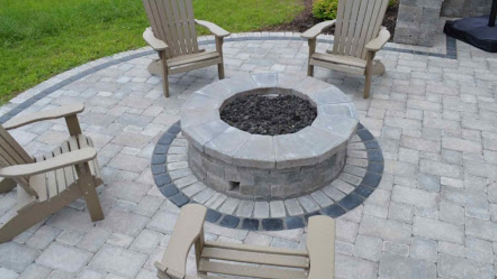
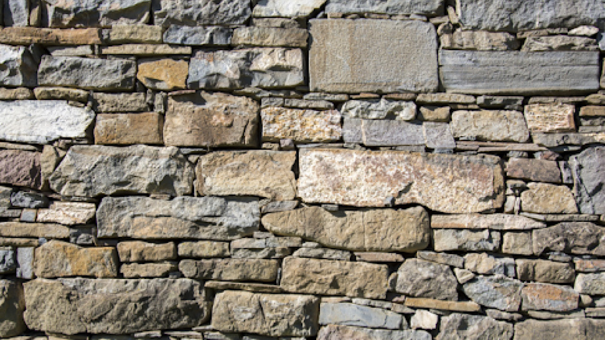

St. Louis Masonry Since 1969
Craftsmanship built to last.
Expert brick, stone, restoration and masonry work for St. Louis homes, businesses and historic landmarks.
Who we are
Nearly six decades of masonry craftsmanship.
Dan Milbourn Construction, Inc. was founded in 1969 by third-generation mason Dan Milbourn. Nearly six decades later, the company remains family-owned and operated, serving homeowners, businesses, institutions and historic properties throughout the St. Louis region.
Our reputation has been built the same way as our work: one project at a time.
What we do
Masonry, restored and rebuilt.
Historic Masonry Restoration
→Custom mortar matching and period-correct repair for historic structures.
Tuckpointing
→Failed mortar joints cut out, repacked and tooled to match.

Porch & Patio Repairs
→Stone and brick porches, steps and patios rebuilt to last.
Chimney Repairs
→Rebuilds, crown repair and flashing for chimneys that have started to fail.

Stone Work
→Cut stone, fieldstone and retaining walls, laid by hand.
Bricklaying
→New brickwork and rebuilds for homes, businesses and institutions.
Featured work
Trusted with St. Louis landmarks.
01
Historic Restoration
The Iconic & Historic St. Louis Gateway Arch
Replaced the broken granite pavers at the entrance and sealed the joints throughout the plaza area.
02
Historic Preservation
The Historic Old Courthouse
Rebuilt the massive stone chimneys, repaired the granite retaining walls and iron fencing, and installed a wheelchair-accessible elevator.
03
Facade Restoration
The Historic Post Office & Customs House
Cleaned and sealed the facade with water repellent, returning the limestone and marble to their original beauty.
What our customers say
Work that speaks for itself.
“We highly recommend Dan Milbourn Construction for any masonry work. The process from the beginning to end was smooth, timely, and professional. The estimate was fairly priced. The crew arrived on time, were very skilled, courteous, and professional. The work they completed was perfect. They left the site cleaner than when they arrived. This is the only masonry company we will use.”
Kathy · Jul 1, 2025
“This is our fourth project with Dan Milbourn Construction. They just completed interior & exterior tuckpointing on one of our company’s garages. Excellent work. As always, they are responsive, quick to bid and schedule and everyone on their team is polite and professional. That’s why we keep coming back!”
Lisa Kratz · Apr 3, 2025
“Would recommend Dan, Chris, and his team to anyone for their home masonry work. They were clear in their proposal and did a great job repairing our stone porch and brick chimneys. Not to mention, they were efficient in getting the large amount of work completed quickly.”
Jonathan Drewett · Apr 23, 2025
Let’s build something that lasts.
Tell us about your project and we will get back to you to discuss the details.